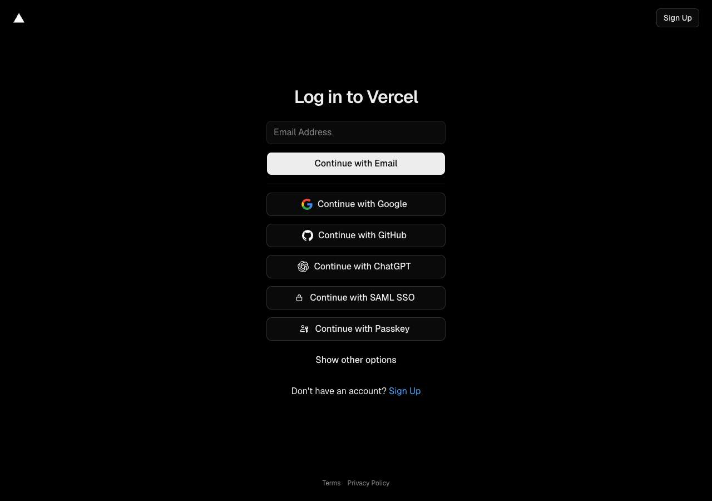

What I Did
One path. Right where the decision happens.
I led discovery, strategy, and execution to centralize the leasing program onto the Product Detail Page — the highest-intent surface in B&H's catalog. Rather than asking customers to navigate to a separate financing hub, we brought the application to them.
The redesigned experience surfaces financing options contextually alongside the product, with a streamlined single-page application flow and clear lender selection. Internal tooling was also updated so staff could reference and recommend the program confidently.

B&H Product Detail Page — where financing now lives

Redesigned B&H Business Financing hub